It asks before it reads.
Point a chat at a project folder. The model sees only the files you tick, and asks for anything else: Deny, Allow once, or Always allow in this chat.
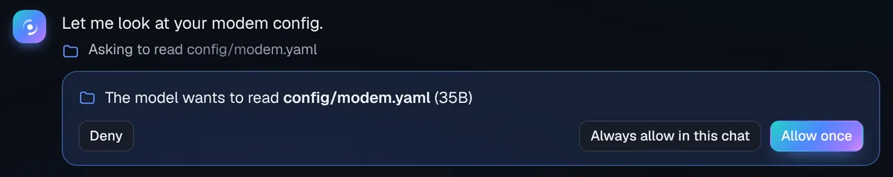
Page Aura and Page Orbit are free Page Studio apps for Anthropic’s models that run on your own API key. No subscription, no server in the middle, and security built in from the first line.
Page AuraChat
A beautiful chat app that puts your monthly API credit to work, with the context you already have. One HTML file you just open, or a desktop app for Windows, macOS and Linux.
Runs right here in your browser, or as a desktop app.
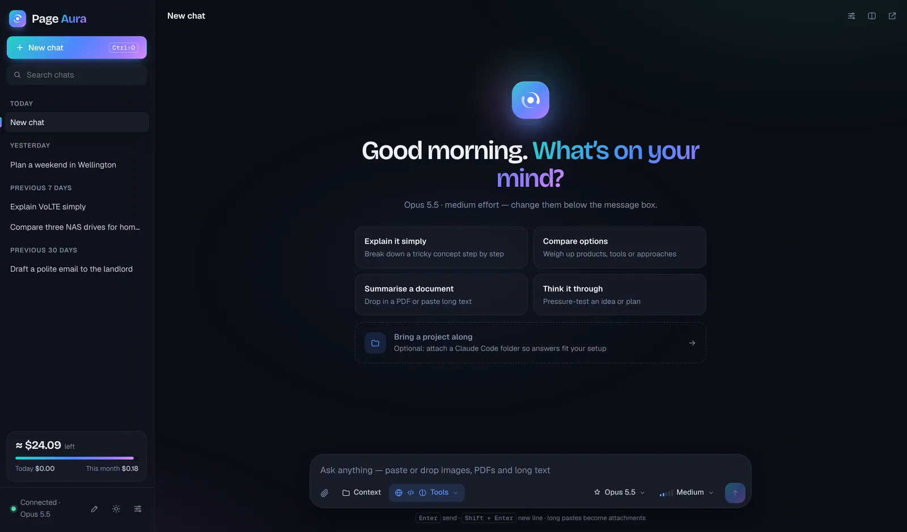
Real screens from Page Aura, with demo data. Every one of these works in the browser file and the desktop app.
Point a chat at a project folder. The model sees only the files you tick, and asks for anything else: Deny, Allow once, or Always allow in this chat.

Live web search with numbered sources, a low-cost economy research mode, and code that draws charts and makes Word, Excel, PowerPoint and PDF files.
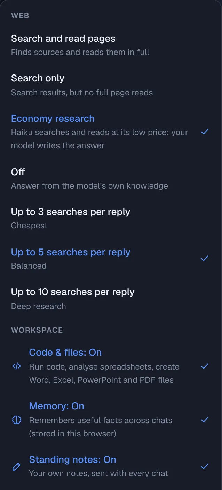
Change any message and resend, or branch into a new chat beside it. The original stays as it was.
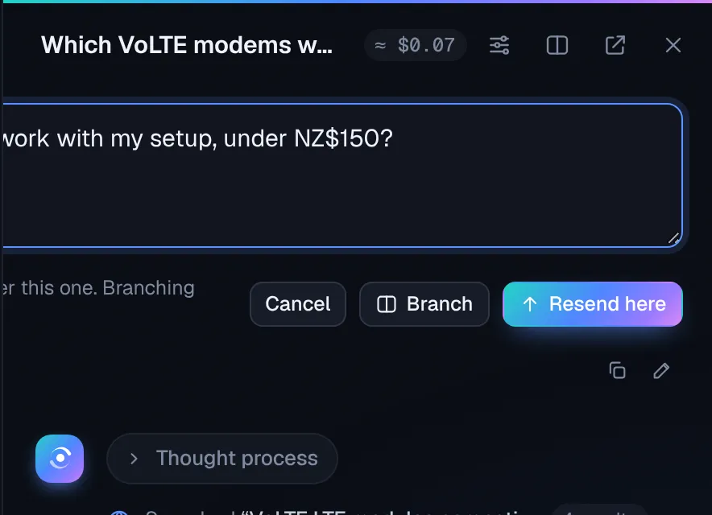
Drop in a spreadsheet. The model works on it in a secure sandbox and hands back the chart, ready to download.
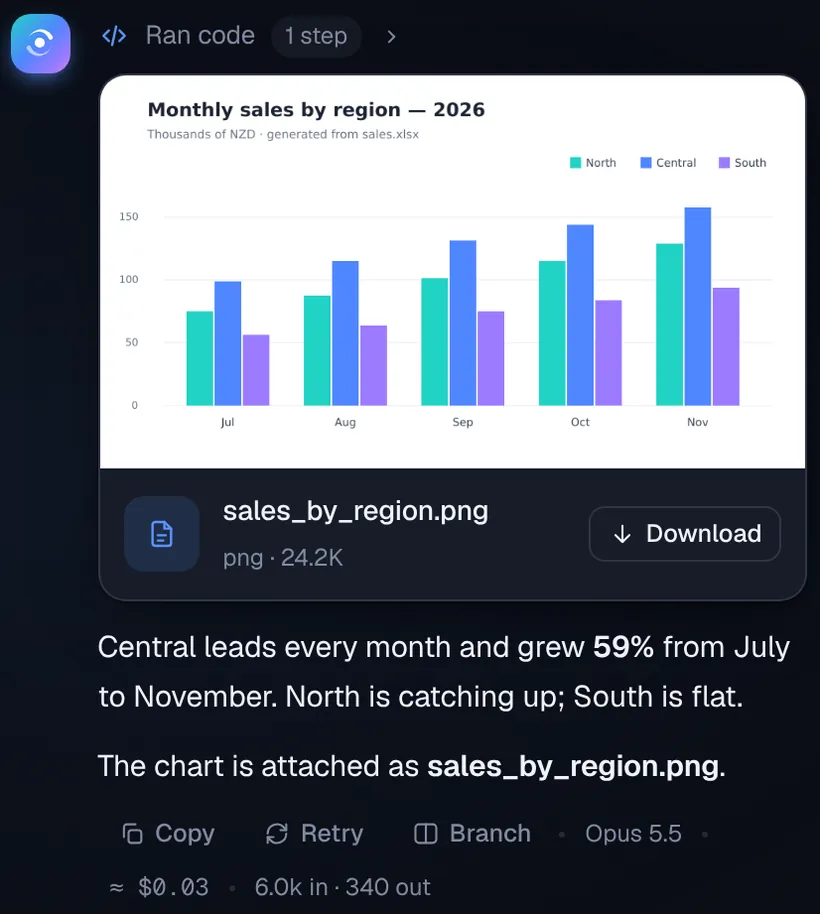
Every reply shows its cost, and a gauge counts down from your balance.
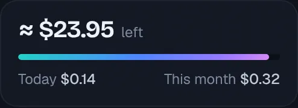
Pick a folder you already work in. CLAUDE.md and the README are ticked for you, secrets are never listed, and a meter shows what it adds to each message. Nothing in the folder is changed.
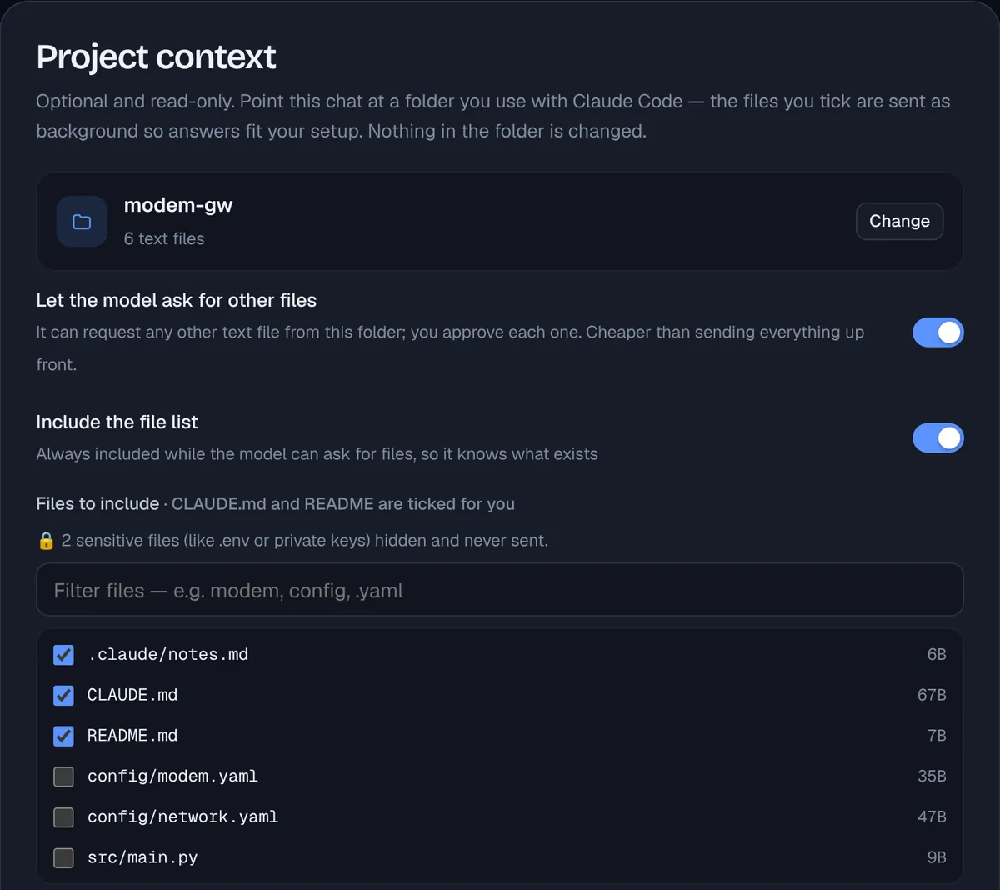
It remembers useful facts across chats. Open, edit or delete any of them.
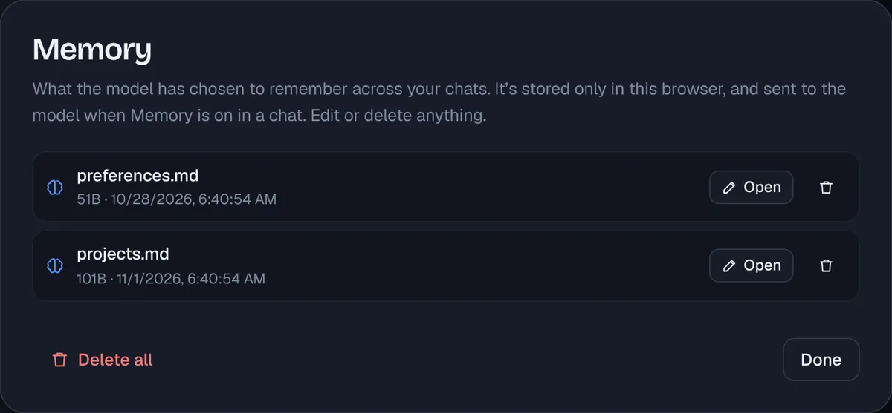
Notes you write yourself, sent with every chat. The model never changes them.
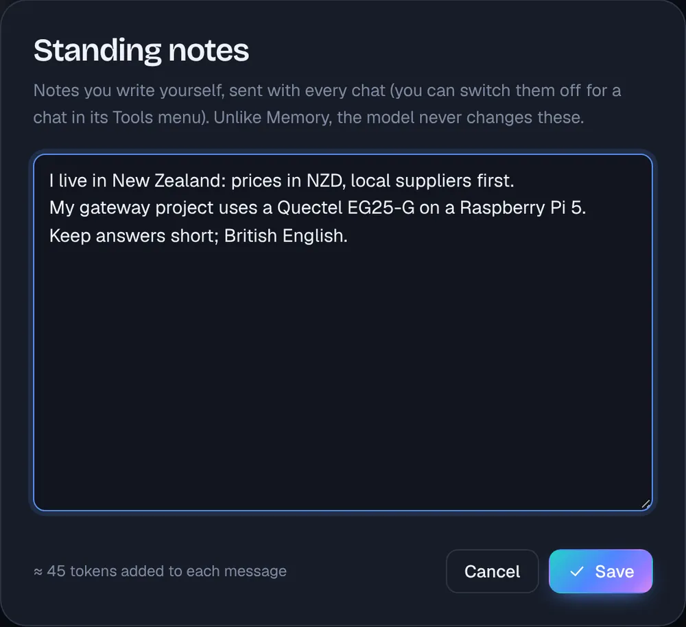
About 690 KB, nothing to install. Open it and paste your key. It stays in your browser, optionally encrypted with a passphrase (AES-256).
Open page-aura.html →Your key in the system keychain, where the interface never sees it. Chats in a local database, apps on your computer, a global shortcut and notifications.
Download for Windows, macOS or Linux →Page OrbitAgents
A control room for Anthropic’s Managed Agents: agents that work in their own cloud sandbox, on their own or on a schedule. See every step and every cent, and let a model tell you what went wrong.
The demo runs in your browser with sample data. To use your own agents, get the desktop app: Anthropic only lets apps, not web pages, reach its agent service.
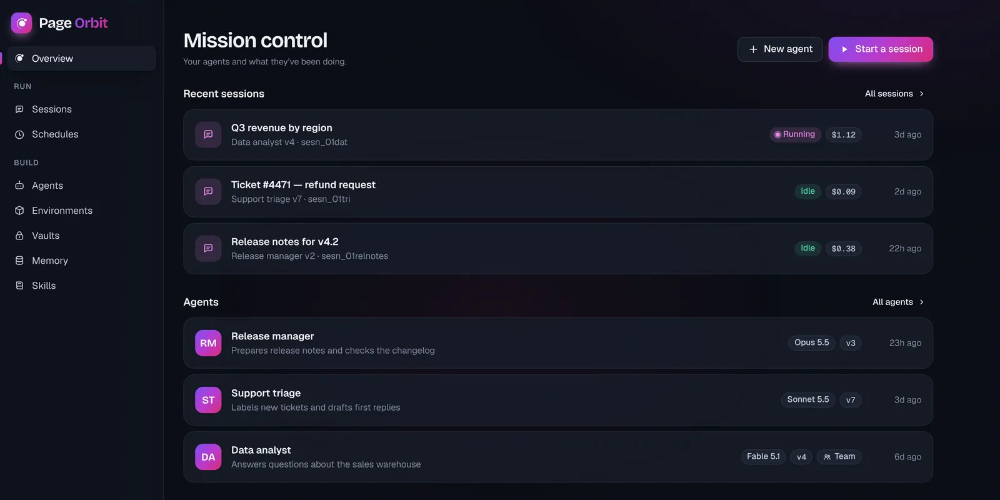
Real screens from Page Orbit, with demo data. Try every one of them in the browser demo.
When a run goes wrong, a model reads the session and the agent’s setup, explains what happened with references to the exact events, and proposes a fix you apply as a new version.
A timeline of every event: messages, tool calls and results, model requests with duration, tokens and cost, errors and retries.
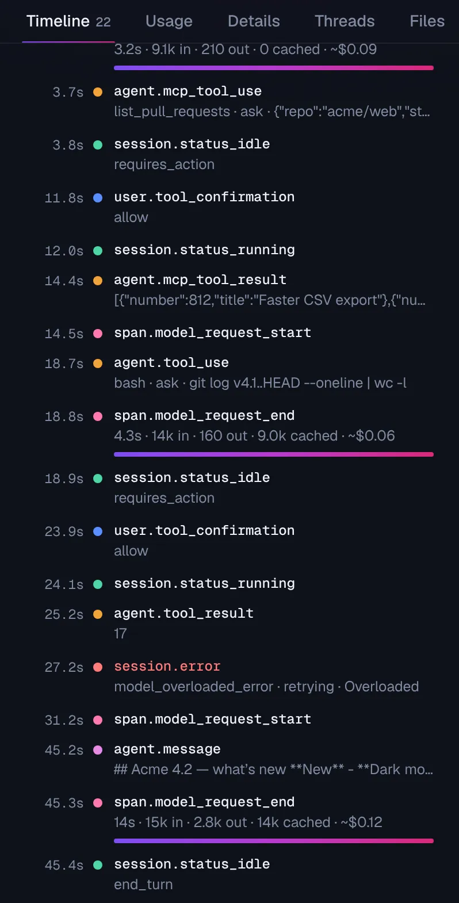
Safe defaults: a new agent reads and searches freely, but asks before running commands or changing files.
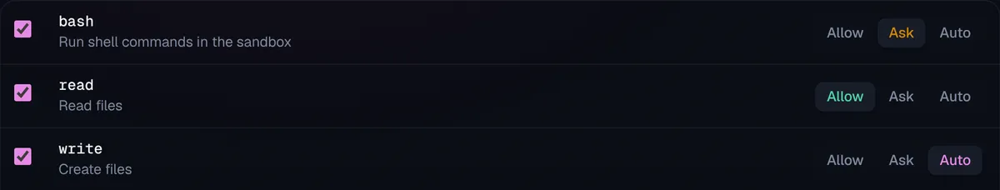
Every save is a new version. Compare any two, and roll back with one click.
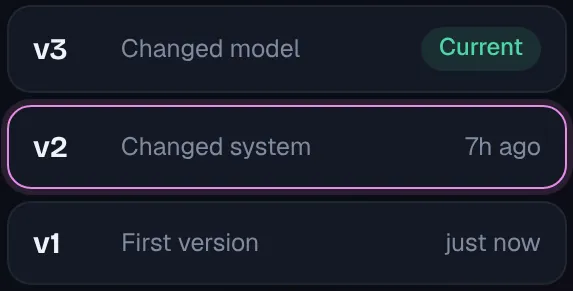
Watch it think, call tools and reply. Approve what it asks, answer custom tools, add an instruction or stop it.
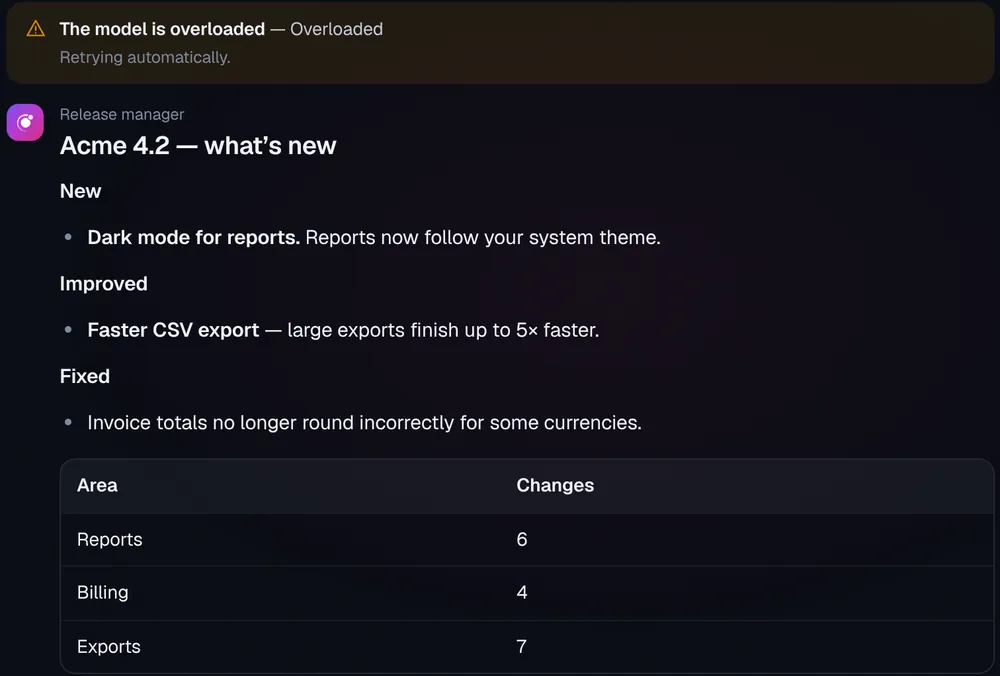
Vaults hold logins and secret variables. Set and replace them; nobody can read them back.
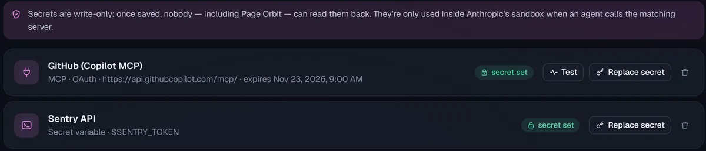
Cron in your time zone, or Run now. Every run is listed, with its session.
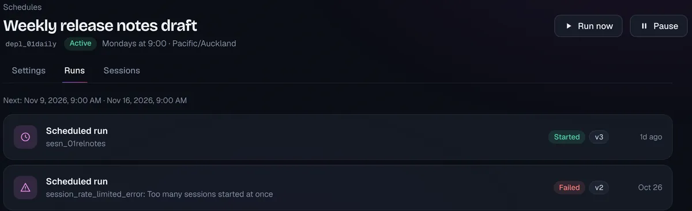
Limit internet access to the sites you list, allow package managers, pre-install packages.
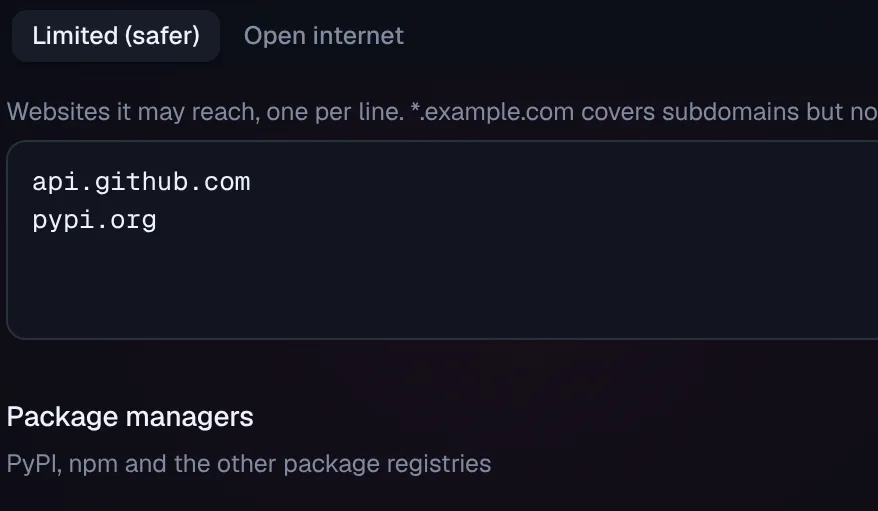
For your own agents. The same Rust core as Page Aura, with its own name, icon and shortcut. Your key stays in the system keychain, shared with Page Aura.
Download for Windows, macOS or Linux →A sample workspace that runs entirely in the page: sessions that reply live, approvals, Diagnose, schedules and memory. Nothing is sent anywhere.
Explore the demo →Page Studio for MacPage Power and Page Relay
A Mac menu-bar app in two halves. Page Power keeps the computer awake while Claude Code, Codex and local models work and pauses them at your battery cutoff. Page Relay pages your phone, any iPhone or Android device, through your own relay when a decision is yours. Both apps here work with Page Relay.
Page Studio runs on macOS, with a Linux preview built from source, and Page Relay has iPhone and Android apps. On Windows, Page Aura and Page Orbit work fully on their own. The links are off until you switch them on in each app’s Settings ▸ Page Relay on this computer.
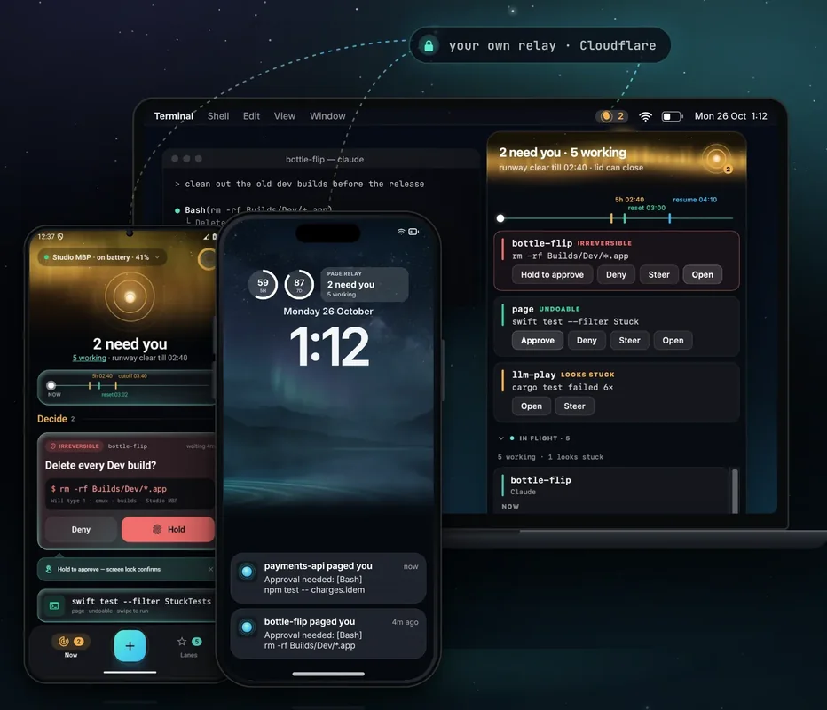
Built the same careful way
An app that holds a key tied to your credit card must be secure by design, not by promise. Two products, one standard: the code that handles your key is small, embedded and checked.
# The apps’ Content-Security-Policy, in short connect-src https://api.anthropic.com # the only place your key can go script-src 'sha256-…' # every script pinned by its hash object-src 'none' frame-src 'none' worker-src 'none'
Which one do I need?
Page AuraChat | Page OrbitAgents | |
|---|---|---|
| Best for | Asking, writing, researching and analysing, in a conversation | Handing work to an agent that runs tools in its own sandbox, now or on a schedule |
| Who does the work | The model replies to you, turn by turn | The agent works on its own and asks you before risky steps |
| Where it runs | One HTML file in your browser, or the desktop app | The desktop app (try the browser demo first) |
| What it uses | Anthropic’s Messages API | Anthropic’s Managed Agents API |
| Start here | Open Page Aura → | Explore the Page Orbit demo → |
Many people use both. They share a key on the desktop, so you add it once.
Open Page Aura right here, explore Page Orbit’s demo, or install both desktop apps.
The installers aren’t code-signed: signing costs money every year, and nobody is making money here. The README shows how to open them, or how to build the apps yourself with no warnings. Check each download against the release’s SHA256SUMS files.